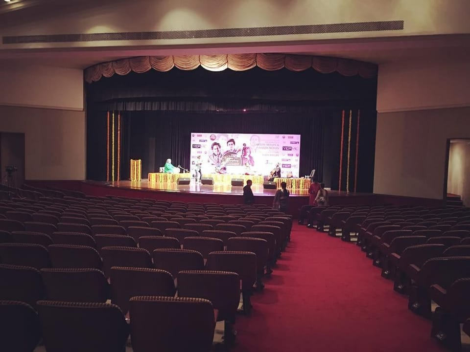
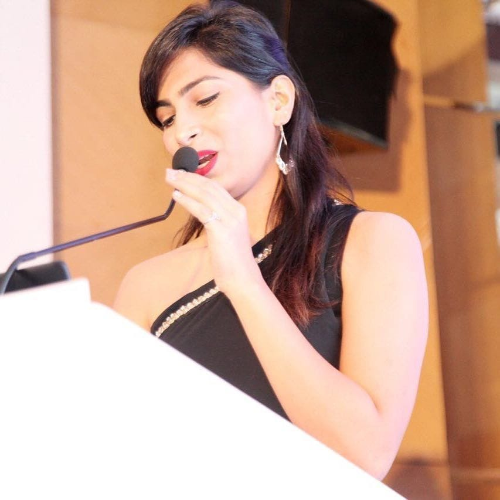
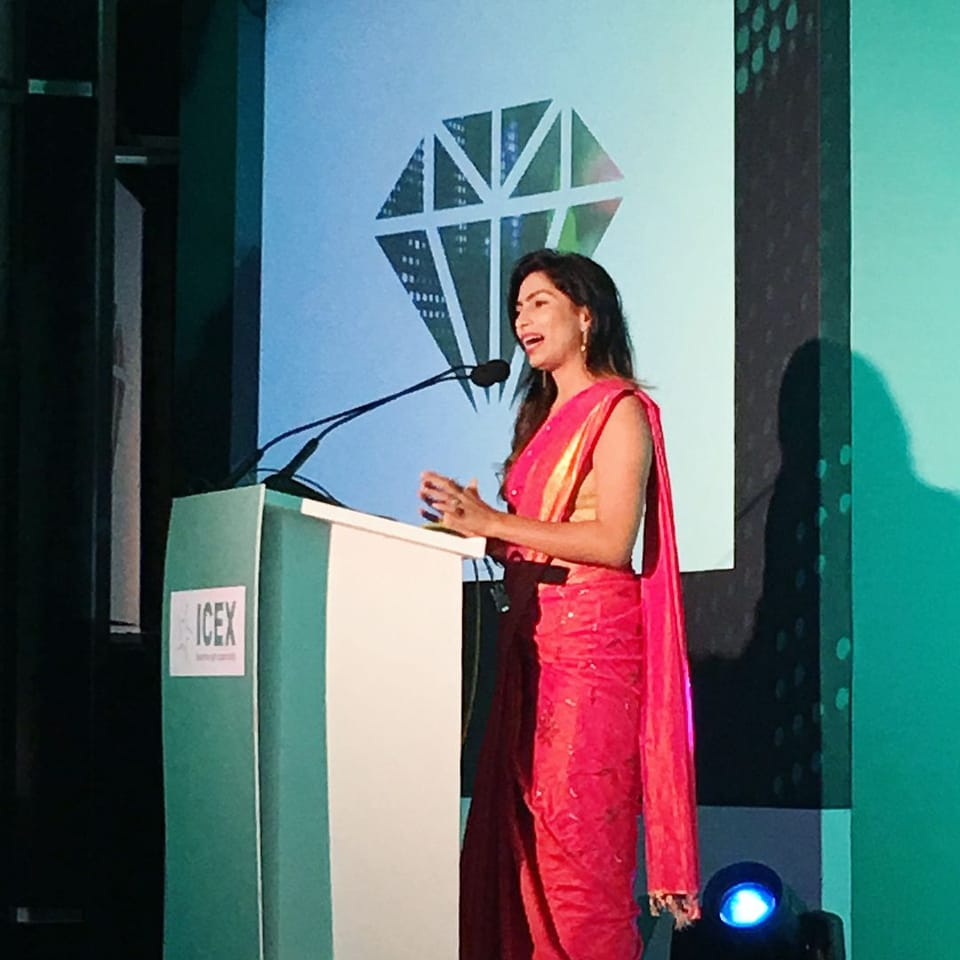
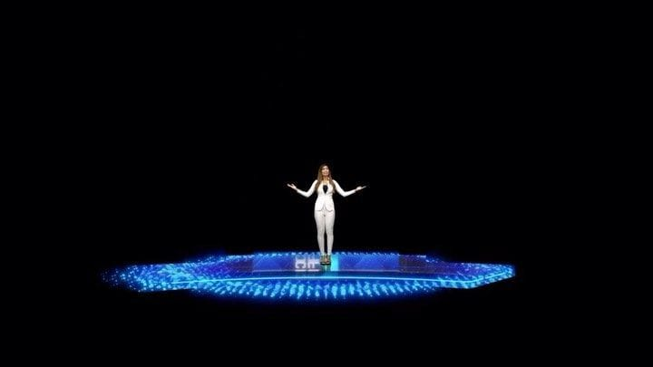

02.04
List of platesचित्र-सूची
19 plates and 7 clips: every image in this edition, with its caption, entry, credit and source. Plates are numbered by the date of the photograph, oldest first.
APlatesचित्रPl. 01–19
-

Pl. 01Outside the catalogue कार्य-सूची से बाहर
Before a concert, Aug 2016: “My stage” (her caption). Before her first full-time show.
-

Pl. 02NS-001
Audi A4 launch, her first show as a full-time emcee
-

Pl. 03NS-004
TAG Heuer × Premier League launch, with her event card
-

Pl. 04Outside the catalogue कार्य-सूची से बाहर
Wadhwa Group “Evergreen Heights” launch, Mar 2017 (her caption)
-

Pl. 05NS-005
ICICI Bank ICONIA Awards, to camera
-

Pl. 06NS-007
The room at the CAI 14th anniversary, Trident, Mumbai
-

Pl. 07Outside the catalogue कार्य-सूची से बाहर
ICEX launch, Aug 2017 (her caption)
-

Pl. 08Outside the catalogue कार्य-सूची से बाहर
Royal Canin Petshop Business Forum 2017, ITC Maratha (lectern signage)
-

Pl. 09Outside the catalogue कार्य-सूची से बाहर
An ICICI Bank event; posted Mar 2018 as a throwback, date not stated
-

Pl. 10NS-021
Walking to the stage, Honda 10th-generation Civic launch
-

Pl. 11Outside the catalogue कार्य-सूची से बाहर
Virtual Opera presentation for Creative Factory India, Jun 2020 (her caption)
-

Pl. 12NS-040
Reading her card, Taj Palace, New Delhi
-

Pl. 13NS-078
The stage at the Tokyo Training Conclave, Hilton Tokyo
-

Pl. 14NS-078
Microphone up, a hand to her ear, Tokyo Training Conclave, Hilton Tokyo
-

Pl. 15NS-086
At the microphone, Himalaya Star Awards, Jaipur (frame from her reel)
-

Pl. 16NS-097
In the empty hall before Forge the Future, The Westin Powai
-

Pl. 17NS-104
At the lectern, with her reflection, Unlocking Tomorrow: Future of Banking
-

Pl. 18NS-104
At the lectern, Unlocking Tomorrow: Future of Banking
-

Pl. 19NS-111
At the lectern, Annual Achievers Awards, Jio World Convention Centre (frame from her reel)


6 plates come from posts whose event has no entry. They are captioned from her caption and never counted. 02.00 item 13
BClipsक्लिप7
- NS-010athe press-room openingNS-010Her voice0:30YouTube video (opens in a new tab)
- NS-010bthe walk-onNS-010Silent · plays once0:04YouTube video (opens in a new tab)
- NS-021athe welcomeNS-021Her voice0:18Film @ipriyeshthakur_ · Her YouTube video (opens in a new tab)
- NS-021bthe revealNS-021Her voice0:29Film @ipriyeshthakur_ · Her YouTube video (opens in a new tab)
- NS-086athe room beforeNS-086Silent · plays once0:03Her Instagram post (opens in a new tab)
- NS-086bthe arrivalNS-086Silent · plays once0:04Her Instagram post (opens in a new tab)
- NS-111athe awards openingNS-111Her voice0:17Her Instagram post (opens in a new tab)
Each clip plays on 04 Watch and on its entry.